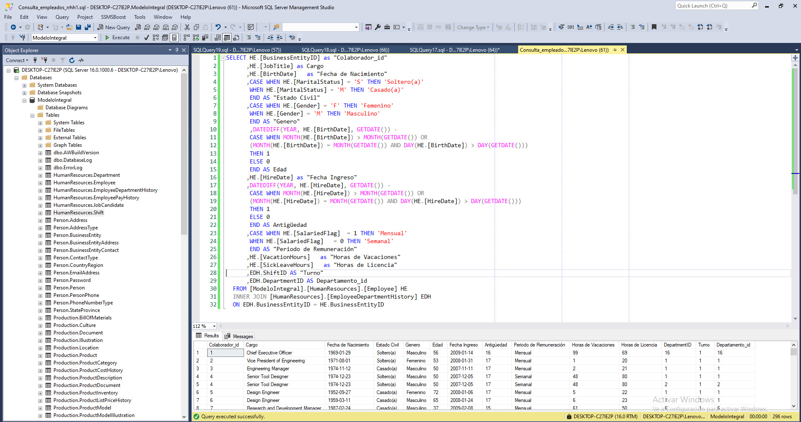
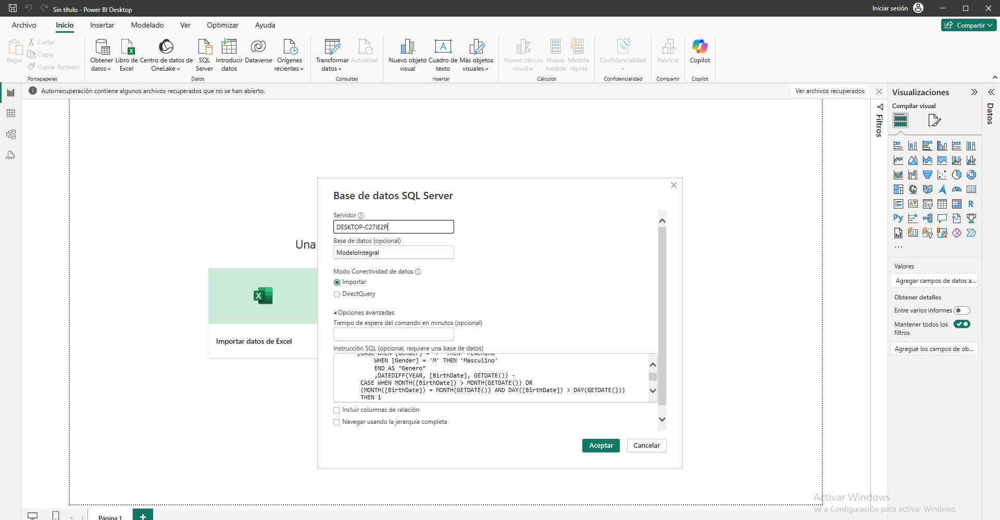
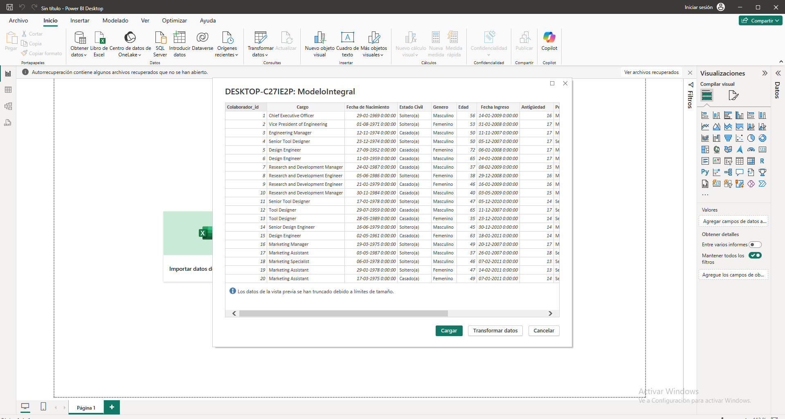
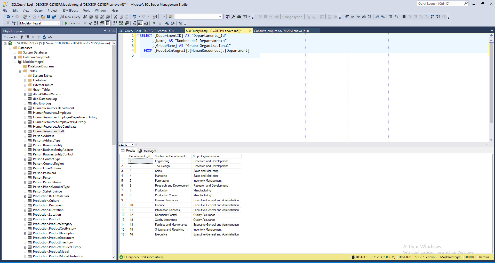
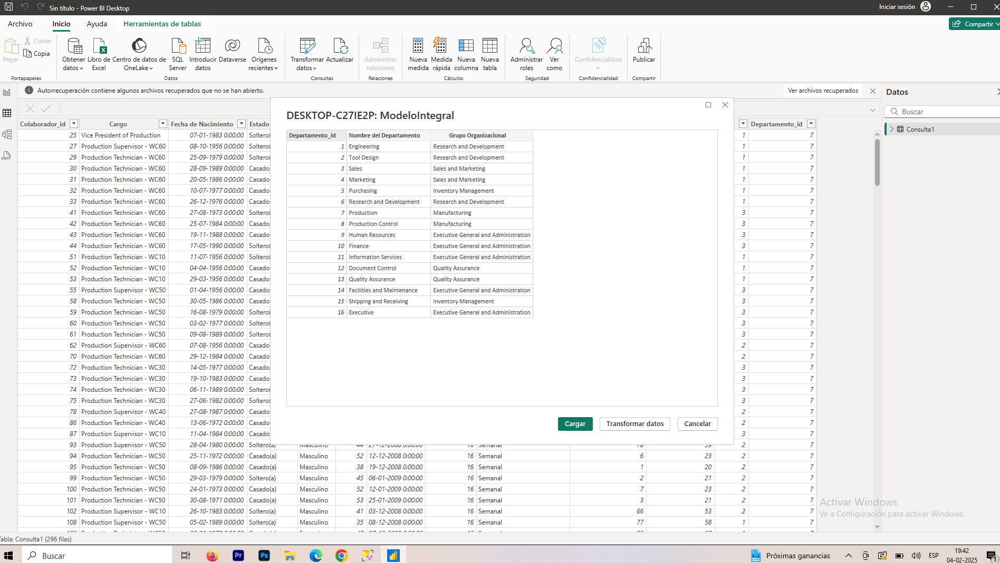

Detalles del Proyecto
Proceso
Consulta SQL para realizar la extracción, transformación y carga (ETL)

Se realiza la conexión en Power BI a través de la consulta

Muestra de los datos cargados para trabajar en el modelo semántico



Extracción y Análisis de Datos con SQL
Para este ejercicio, se trabajó con una base de datos pública comúnmente utilizada como referencia en análisis de datos y gestión empresarial. Se empleó SQL Server Management Studio (SSMS) como herramienta para ejecutar las consultas y explorar la información, mientras que para la visualización se utilizó Power BI.
Proceso seguido
1. Exploración de la Base de Datos
El primer paso fue conocer la estructura de la base de datos, identificando las tablas y sus relaciones. Se analizaron tablas relacionadas con empleados, departamentos y turnos laborales, asegurando que la información obtenida fuera útil y estuviera bien organizada.
2. Extracción de Información de Empleados
Se diseñó una consulta SQL para extraer datos clave del personal, incluyendo:
- Información personal: nombre, estado civil, género y fecha de nacimiento.
- Datos laborales: fecha de ingreso, antigüedad, periodo de pago y días disponibles para vacaciones.
- Cálculos dinámicos: edad de los empleados mediante
DATEDIFF(). - Unión de tablas: incorporación de detalles del departamento y turno asignado.
- Transformación de datos: uso de
CASEpara convertir códigos numéricos en información legible.
3. Consulta de Departamentos y Turnos
Además de los datos de los empleados, se extrajo información estructurada sobre:
- Departamentos: mostrando la organización interna de la empresa.
- Turnos de trabajo: horarios de inicio y fin de cada jornada.
4. Validación y Visualización de Resultados
Se revisaron los resultados para garantizar que:
- La información se presentara de forma clara y comprensible.
- Los cálculos fueran correctos.
- Los datos extraídos fueran coherentes con la estructura de la base de datos.
Conclusión
Este proceso permitió extraer y analizar información clave del personal utilizando SQL. Se aplicaron técnicas de unión de tablas, transformación de datos y cálculos dinámicos, facilitando una visión clara de la estructura organizacional y la gestión del talento. Este tipo de análisis es fundamental para optimizar la toma de decisiones en cualquier empresa.